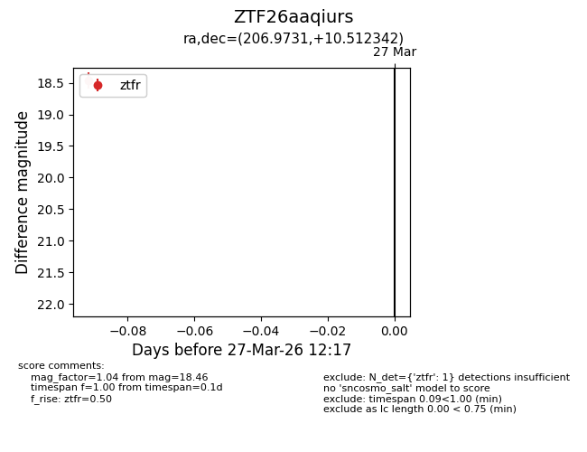
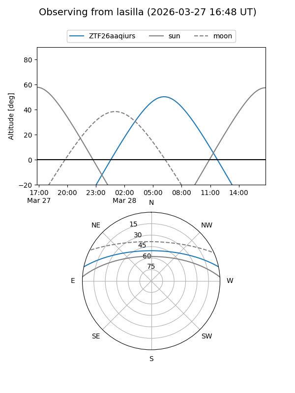
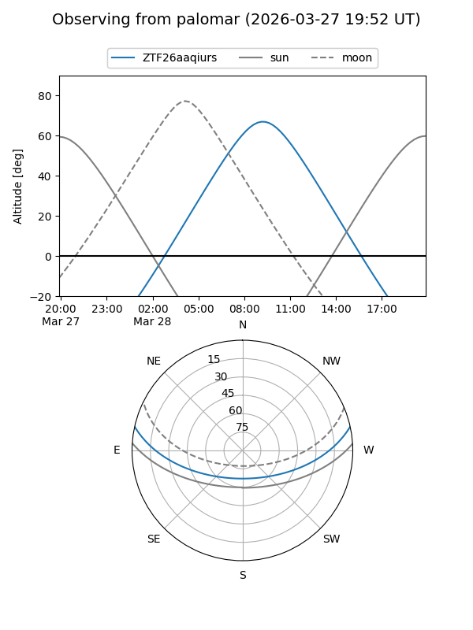

ZTF26aaqiurs
Target ZTF26aaqiurs at 2026-03-27 12:21
Aliases and brokers:
FINK: link
Lasair: link
ALeRCE: link
alt names
ZTF26aaqiurs (ztf,fink_ztf)
Coordinates:
equatorial (ra, dec) = 206.9731,+10.51234
equatorial (HMS+DMS) = 13:47:53.54,+10:30:44.43
galactic (l, b) = (344.2823,+68.72174)
Flags:
Photometry:
last ztfr=18.46
1 ztfr detections
Lightcurve

Visibility


Additional plots